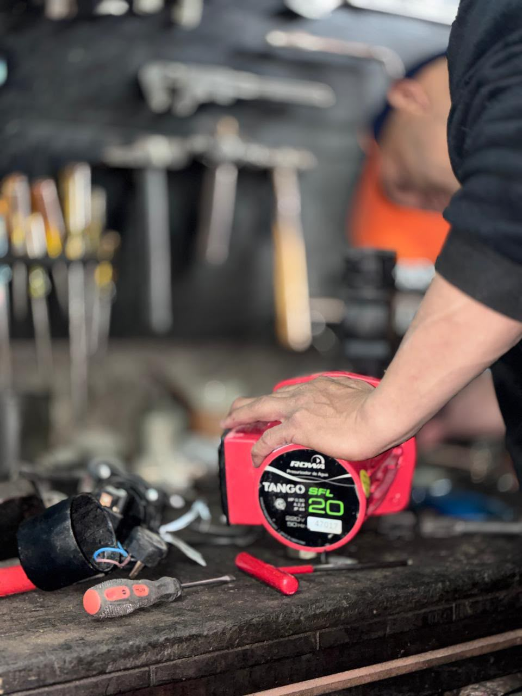
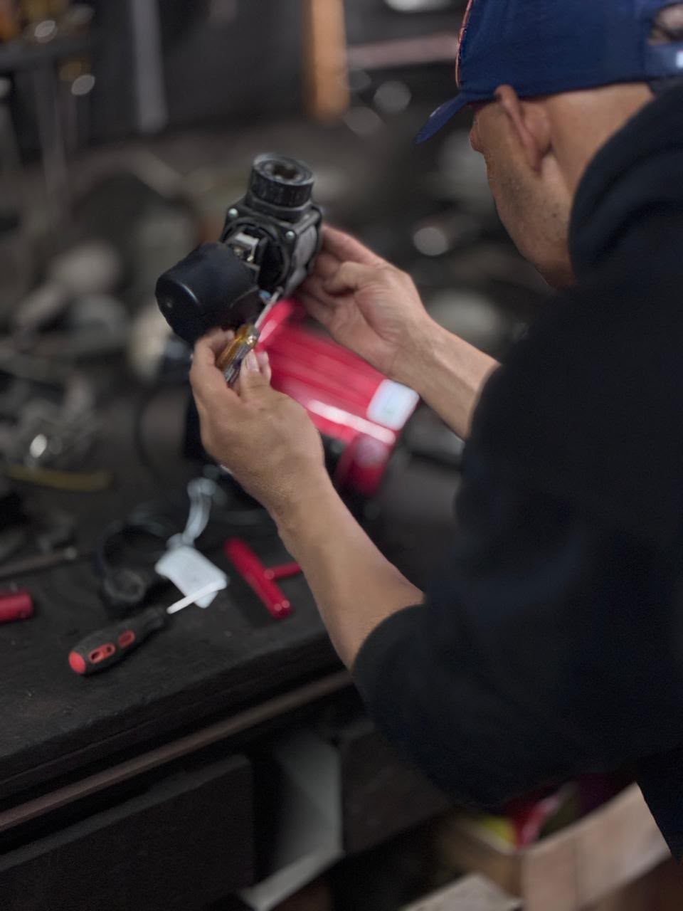
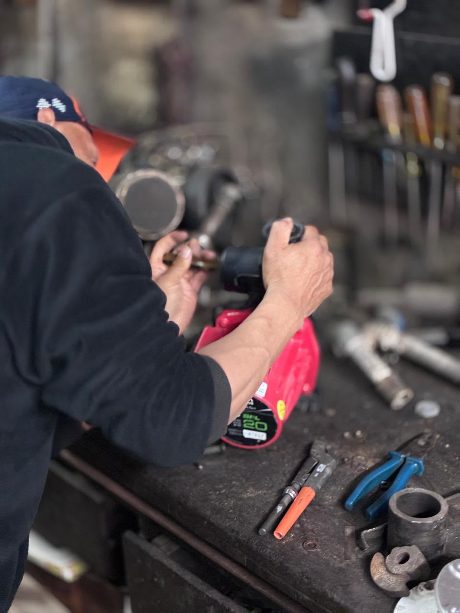

!
No arranca
Revisamos la causa antes de reemplazar componentes.
Servicio técnico especializado en reparación de bombas ROWA. Encontramos la falla, te explicamos qué tiene y cuánto cuesta antes de reparar.
Revisamos tu bomba y encontramos la causa del problema.
Te explicamos qué tiene y cuánto cuesta antes de reparar.
Reparamos, probamos y te entregamos tu bomba funcionando.
Conocemos las fallas más comunes de los equipos ROWA y sabemos dónde buscar.
Revisamos la causa antes de reemplazar componentes.
Diagnosticamos bomba, sensores e instalación.
Buscamos el origen del ruido antes de intervenir.
Revisamos control, sensores y funcionamiento.
Identificamos qué provoca el encendido intermitente.
Localizamos la pérdida y evaluamos la reparación.
Te explicamos qué tiene y cuánto cuesta antes de hacer el trabajo. Sin sorpresas.
Modelo, síntoma y, si podés, foto o video.
Revisamos la bomba y la instalación para encontrar la causa.
Sabés qué recomendamos y cuánto cuesta antes de autorizar.
Hacemos el trabajo y verificamos que el equipo funcione correctamente.
Diagnosticamos antes de cambiar piezas, reparamos con criterio y comprobamos el resultado.

Medición y revisión de componentes antes de definir la reparación.

Intervenimos únicamente sobre lo que el diagnóstico indica.

Verificamos el funcionamiento antes de dar el trabajo por terminado.
Con el modelo y una breve descripción de la falla podemos orientarte mejor desde el primer contacto y verificar repuestos.
Depende del diagnóstico, la antigüedad, el estado general, la disponibilidad de repuestos y el costo. Te explicamos las alternativas antes de decidir.
Sí. “No arranca” es un síntoma. Revisamos alimentación, componentes eléctricos, sensores, estado mecánico e instalación según el equipo.
Sí, cuando el equipo y la instalación se encuentran dentro del alcance técnico. En sistemas de mayor tamaño conviene enviar fotos, modelo y características antes de coordinar.
Sí. Una vez identificado el problema, te informamos el trabajo propuesto y su costo antes de intervenir.
Una foto de la etiqueta, una foto o video de la falla y el barrio o localidad. Con esos datos podemos orientarte mejor desde el primer contacto.
La coordinación depende de la ubicación, el tipo de equipo y la disponibilidad.
Con tres datos podemos orientarte más rápido y decirte cómo seguir.